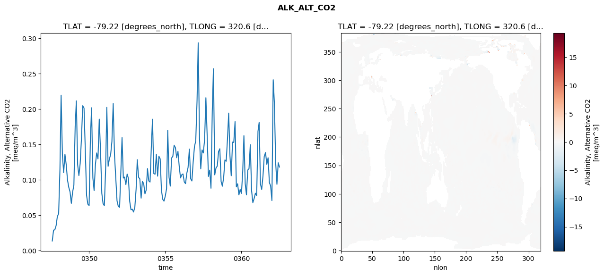
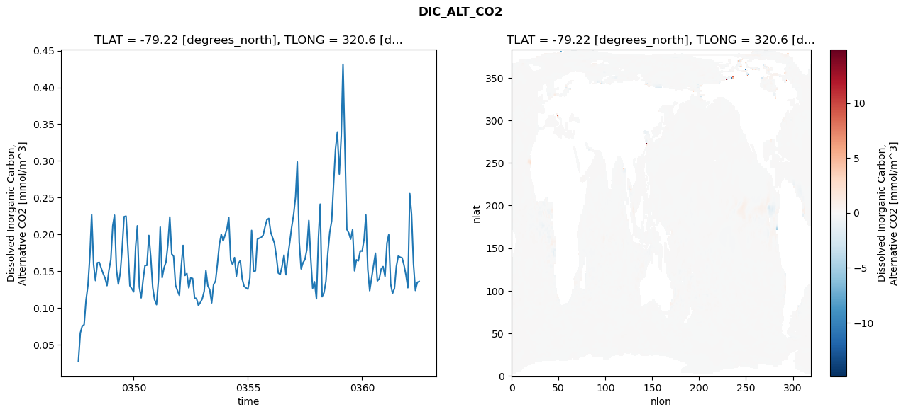
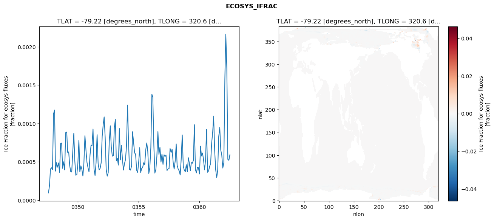
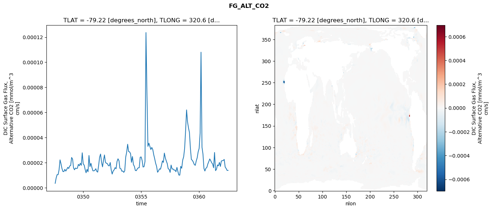

glb-dor_North_Atlantic_basin_022_1999-07-01_00090#
Simulation details#
Case: smyle.cdr-atlas-v0.glb-dor_North_Atlantic_basin_022_1999-07-01_00090.001
Basin: North_Atlantic_basin
Polygon: 22.0
Start date: 1999-07
Show code cell source Hide code cell source
import xarray as xr
import matplotlib.pyplot as plt
Show code cell source Hide code cell source
zarr_store = "/path/to/zarr/store"
# Parameters
zarr_store = "/global/cfs/projectdirs/m4746/Projects/Ocean-CDR-Atlas-v0/data/validation/smyle.cdr-atlas-v0.glb-dor_North_Atlantic_basin_022_1999-07-01_00090.001.validation.zarr"
Show code cell source Hide code cell source
%%time
ds_o = xr.open_zarr(zarr_store).compute()
ds_o
CPU times: user 659 ms, sys: 472 ms, total: 1.13 s
Wall time: 1.45 s
<xarray.Dataset> Size: 2MB
Dimensions: (nlat: 384, nlon: 320, time: 180)
Coordinates:
TLAT float64 8B -79.22
TLONG float64 8B 320.6
ULAT float64 8B -78.95
ULONG float64 8B 321.1
* time (time) object 1kB 0347-08-01 00:00:00 ... 0362-07-01 0...
z_t float32 4B 500.0
Dimensions without coordinates: nlat, nlon
Data variables:
ALK_ALT_CO2_diff (nlat, nlon) float32 492kB nan nan nan ... nan nan nan
ALK_ALT_CO2_rmse (time) float64 1kB 0.01346 0.02877 ... 0.1241 0.118
DIC_ALT_CO2_diff (nlat, nlon) float32 492kB nan nan nan ... nan nan nan
DIC_ALT_CO2_rmse (time) float64 1kB 0.02707 0.06571 ... 0.1348 0.1358
ECOSYS_IFRAC_diff (nlat, nlon) float32 492kB nan nan nan ... nan nan nan
ECOSYS_IFRAC_rmse (time) float64 1kB 9.457e-05 0.0001865 ... 0.0005909
FG_ALT_CO2_diff (nlat, nlon) float32 492kB nan nan nan ... nan nan nan
FG_ALT_CO2_rmse (time) float64 1kB 3.56e-06 7.88e-06 ... 1.387e-05xarray.Dataset
- nlat: 384
- nlon: 320
- time: 180
- TLAT()float64-79.22
- long_name :
- array of t-grid latitudes
- units :
- degrees_north
array(-79.22052261)
- TLONG()float64320.6
- long_name :
- array of t-grid longitudes
- units :
- degrees_east
array(320.56250892)
- ULAT()float64-78.95
- long_name :
- array of u-grid latitudes
- units :
- degrees_north
array(-78.95289509)
- ULONG()float64321.1
- long_name :
- array of u-grid longitudes
- units :
- degrees_east
array(321.12500894)
- time(time)object0347-08-01 00:00:00 ... 0362-07-...
- bounds :
- time_bound
- long_name :
- time
array([cftime.DatetimeNoLeap(347, 8, 1, 0, 0, 0, 0, has_year_zero=True), cftime.DatetimeNoLeap(347, 9, 1, 0, 0, 0, 0, has_year_zero=True), cftime.DatetimeNoLeap(347, 10, 1, 0, 0, 0, 0, has_year_zero=True), cftime.DatetimeNoLeap(347, 11, 1, 0, 0, 0, 0, has_year_zero=True), cftime.DatetimeNoLeap(347, 12, 1, 0, 0, 0, 0, has_year_zero=True), cftime.DatetimeNoLeap(348, 1, 1, 0, 0, 0, 0, has_year_zero=True), cftime.DatetimeNoLeap(348, 2, 1, 0, 0, 0, 0, has_year_zero=True), cftime.DatetimeNoLeap(348, 3, 1, 0, 0, 0, 0, has_year_zero=True), cftime.DatetimeNoLeap(348, 4, 1, 0, 0, 0, 0, has_year_zero=True), cftime.DatetimeNoLeap(348, 5, 1, 0, 0, 0, 0, has_year_zero=True), cftime.DatetimeNoLeap(348, 6, 1, 0, 0, 0, 0, has_year_zero=True), cftime.DatetimeNoLeap(348, 7, 1, 0, 0, 0, 0, has_year_zero=True), cftime.DatetimeNoLeap(348, 8, 1, 0, 0, 0, 0, has_year_zero=True), cftime.DatetimeNoLeap(348, 9, 1, 0, 0, 0, 0, has_year_zero=True), cftime.DatetimeNoLeap(348, 10, 1, 0, 0, 0, 0, has_year_zero=True), cftime.DatetimeNoLeap(348, 11, 1, 0, 0, 0, 0, has_year_zero=True), cftime.DatetimeNoLeap(348, 12, 1, 0, 0, 0, 0, has_year_zero=True), cftime.DatetimeNoLeap(349, 1, 1, 0, 0, 0, 0, has_year_zero=True), cftime.DatetimeNoLeap(349, 2, 1, 0, 0, 0, 0, has_year_zero=True), cftime.DatetimeNoLeap(349, 3, 1, 0, 0, 0, 0, has_year_zero=True), cftime.DatetimeNoLeap(349, 4, 1, 0, 0, 0, 0, has_year_zero=True), cftime.DatetimeNoLeap(349, 5, 1, 0, 0, 0, 0, has_year_zero=True), cftime.DatetimeNoLeap(349, 6, 1, 0, 0, 0, 0, has_year_zero=True), cftime.DatetimeNoLeap(349, 7, 1, 0, 0, 0, 0, has_year_zero=True), cftime.DatetimeNoLeap(349, 8, 1, 0, 0, 0, 0, has_year_zero=True), cftime.DatetimeNoLeap(349, 9, 1, 0, 0, 0, 0, has_year_zero=True), cftime.DatetimeNoLeap(349, 10, 1, 0, 0, 0, 0, has_year_zero=True), cftime.DatetimeNoLeap(349, 11, 1, 0, 0, 0, 0, has_year_zero=True), cftime.DatetimeNoLeap(349, 12, 1, 0, 0, 0, 0, has_year_zero=True), cftime.DatetimeNoLeap(350, 1, 1, 0, 0, 0, 0, has_year_zero=True), cftime.DatetimeNoLeap(350, 2, 1, 0, 0, 0, 0, has_year_zero=True), cftime.DatetimeNoLeap(350, 3, 1, 0, 0, 0, 0, has_year_zero=True), cftime.DatetimeNoLeap(350, 4, 1, 0, 0, 0, 0, has_year_zero=True), cftime.DatetimeNoLeap(350, 5, 1, 0, 0, 0, 0, has_year_zero=True), cftime.DatetimeNoLeap(350, 6, 1, 0, 0, 0, 0, has_year_zero=True), cftime.DatetimeNoLeap(350, 7, 1, 0, 0, 0, 0, has_year_zero=True), cftime.DatetimeNoLeap(350, 8, 1, 0, 0, 0, 0, has_year_zero=True), cftime.DatetimeNoLeap(350, 9, 1, 0, 0, 0, 0, has_year_zero=True), cftime.DatetimeNoLeap(350, 10, 1, 0, 0, 0, 0, has_year_zero=True), cftime.DatetimeNoLeap(350, 11, 1, 0, 0, 0, 0, has_year_zero=True), cftime.DatetimeNoLeap(350, 12, 1, 0, 0, 0, 0, has_year_zero=True), cftime.DatetimeNoLeap(351, 1, 1, 0, 0, 0, 0, has_year_zero=True), cftime.DatetimeNoLeap(351, 2, 1, 0, 0, 0, 0, has_year_zero=True), cftime.DatetimeNoLeap(351, 3, 1, 0, 0, 0, 0, has_year_zero=True), cftime.DatetimeNoLeap(351, 4, 1, 0, 0, 0, 0, has_year_zero=True), cftime.DatetimeNoLeap(351, 5, 1, 0, 0, 0, 0, has_year_zero=True), cftime.DatetimeNoLeap(351, 6, 1, 0, 0, 0, 0, has_year_zero=True), cftime.DatetimeNoLeap(351, 7, 1, 0, 0, 0, 0, has_year_zero=True), cftime.DatetimeNoLeap(351, 8, 1, 0, 0, 0, 0, has_year_zero=True), cftime.DatetimeNoLeap(351, 9, 1, 0, 0, 0, 0, has_year_zero=True), cftime.DatetimeNoLeap(351, 10, 1, 0, 0, 0, 0, has_year_zero=True), cftime.DatetimeNoLeap(351, 11, 1, 0, 0, 0, 0, has_year_zero=True), cftime.DatetimeNoLeap(351, 12, 1, 0, 0, 0, 0, has_year_zero=True), cftime.DatetimeNoLeap(352, 1, 1, 0, 0, 0, 0, has_year_zero=True), cftime.DatetimeNoLeap(352, 2, 1, 0, 0, 0, 0, has_year_zero=True), cftime.DatetimeNoLeap(352, 3, 1, 0, 0, 0, 0, has_year_zero=True), cftime.DatetimeNoLeap(352, 4, 1, 0, 0, 0, 0, has_year_zero=True), cftime.DatetimeNoLeap(352, 5, 1, 0, 0, 0, 0, has_year_zero=True), cftime.DatetimeNoLeap(352, 6, 1, 0, 0, 0, 0, has_year_zero=True), cftime.DatetimeNoLeap(352, 7, 1, 0, 0, 0, 0, has_year_zero=True), cftime.DatetimeNoLeap(352, 8, 1, 0, 0, 0, 0, has_year_zero=True), cftime.DatetimeNoLeap(352, 9, 1, 0, 0, 0, 0, has_year_zero=True), cftime.DatetimeNoLeap(352, 10, 1, 0, 0, 0, 0, has_year_zero=True), cftime.DatetimeNoLeap(352, 11, 1, 0, 0, 0, 0, has_year_zero=True), cftime.DatetimeNoLeap(352, 12, 1, 0, 0, 0, 0, has_year_zero=True), cftime.DatetimeNoLeap(353, 1, 1, 0, 0, 0, 0, has_year_zero=True), cftime.DatetimeNoLeap(353, 2, 1, 0, 0, 0, 0, has_year_zero=True), cftime.DatetimeNoLeap(353, 3, 1, 0, 0, 0, 0, has_year_zero=True), cftime.DatetimeNoLeap(353, 4, 1, 0, 0, 0, 0, has_year_zero=True), cftime.DatetimeNoLeap(353, 5, 1, 0, 0, 0, 0, has_year_zero=True), cftime.DatetimeNoLeap(353, 6, 1, 0, 0, 0, 0, has_year_zero=True), cftime.DatetimeNoLeap(353, 7, 1, 0, 0, 0, 0, has_year_zero=True), cftime.DatetimeNoLeap(353, 8, 1, 0, 0, 0, 0, has_year_zero=True), cftime.DatetimeNoLeap(353, 9, 1, 0, 0, 0, 0, has_year_zero=True), cftime.DatetimeNoLeap(353, 10, 1, 0, 0, 0, 0, has_year_zero=True), cftime.DatetimeNoLeap(353, 11, 1, 0, 0, 0, 0, has_year_zero=True), cftime.DatetimeNoLeap(353, 12, 1, 0, 0, 0, 0, has_year_zero=True), cftime.DatetimeNoLeap(354, 1, 1, 0, 0, 0, 0, has_year_zero=True), cftime.DatetimeNoLeap(354, 2, 1, 0, 0, 0, 0, has_year_zero=True), cftime.DatetimeNoLeap(354, 3, 1, 0, 0, 0, 0, has_year_zero=True), cftime.DatetimeNoLeap(354, 4, 1, 0, 0, 0, 0, has_year_zero=True), cftime.DatetimeNoLeap(354, 5, 1, 0, 0, 0, 0, has_year_zero=True), cftime.DatetimeNoLeap(354, 6, 1, 0, 0, 0, 0, has_year_zero=True), cftime.DatetimeNoLeap(354, 7, 1, 0, 0, 0, 0, has_year_zero=True), cftime.DatetimeNoLeap(354, 8, 1, 0, 0, 0, 0, has_year_zero=True), cftime.DatetimeNoLeap(354, 9, 1, 0, 0, 0, 0, has_year_zero=True), cftime.DatetimeNoLeap(354, 10, 1, 0, 0, 0, 0, has_year_zero=True), cftime.DatetimeNoLeap(354, 11, 1, 0, 0, 0, 0, has_year_zero=True), cftime.DatetimeNoLeap(354, 12, 1, 0, 0, 0, 0, has_year_zero=True), cftime.DatetimeNoLeap(355, 1, 1, 0, 0, 0, 0, has_year_zero=True), cftime.DatetimeNoLeap(355, 2, 1, 0, 0, 0, 0, has_year_zero=True), cftime.DatetimeNoLeap(355, 3, 1, 0, 0, 0, 0, has_year_zero=True), cftime.DatetimeNoLeap(355, 4, 1, 0, 0, 0, 0, has_year_zero=True), cftime.DatetimeNoLeap(355, 5, 1, 0, 0, 0, 0, has_year_zero=True), cftime.DatetimeNoLeap(355, 6, 1, 0, 0, 0, 0, has_year_zero=True), cftime.DatetimeNoLeap(355, 7, 1, 0, 0, 0, 0, has_year_zero=True), cftime.DatetimeNoLeap(355, 8, 1, 0, 0, 0, 0, has_year_zero=True), cftime.DatetimeNoLeap(355, 9, 1, 0, 0, 0, 0, has_year_zero=True), cftime.DatetimeNoLeap(355, 10, 1, 0, 0, 0, 0, has_year_zero=True), cftime.DatetimeNoLeap(355, 11, 1, 0, 0, 0, 0, has_year_zero=True), cftime.DatetimeNoLeap(355, 12, 1, 0, 0, 0, 0, has_year_zero=True), cftime.DatetimeNoLeap(356, 1, 1, 0, 0, 0, 0, has_year_zero=True), cftime.DatetimeNoLeap(356, 2, 1, 0, 0, 0, 0, has_year_zero=True), cftime.DatetimeNoLeap(356, 3, 1, 0, 0, 0, 0, has_year_zero=True), cftime.DatetimeNoLeap(356, 4, 1, 0, 0, 0, 0, has_year_zero=True), cftime.DatetimeNoLeap(356, 5, 1, 0, 0, 0, 0, has_year_zero=True), cftime.DatetimeNoLeap(356, 6, 1, 0, 0, 0, 0, has_year_zero=True), cftime.DatetimeNoLeap(356, 7, 1, 0, 0, 0, 0, has_year_zero=True), cftime.DatetimeNoLeap(356, 8, 1, 0, 0, 0, 0, has_year_zero=True), cftime.DatetimeNoLeap(356, 9, 1, 0, 0, 0, 0, has_year_zero=True), cftime.DatetimeNoLeap(356, 10, 1, 0, 0, 0, 0, has_year_zero=True), cftime.DatetimeNoLeap(356, 11, 1, 0, 0, 0, 0, has_year_zero=True), cftime.DatetimeNoLeap(356, 12, 1, 0, 0, 0, 0, has_year_zero=True), cftime.DatetimeNoLeap(357, 1, 1, 0, 0, 0, 0, has_year_zero=True), cftime.DatetimeNoLeap(357, 2, 1, 0, 0, 0, 0, has_year_zero=True), cftime.DatetimeNoLeap(357, 3, 1, 0, 0, 0, 0, has_year_zero=True), cftime.DatetimeNoLeap(357, 4, 1, 0, 0, 0, 0, has_year_zero=True), cftime.DatetimeNoLeap(357, 5, 1, 0, 0, 0, 0, has_year_zero=True), cftime.DatetimeNoLeap(357, 6, 1, 0, 0, 0, 0, has_year_zero=True), cftime.DatetimeNoLeap(357, 7, 1, 0, 0, 0, 0, has_year_zero=True), cftime.DatetimeNoLeap(357, 8, 1, 0, 0, 0, 0, has_year_zero=True), cftime.DatetimeNoLeap(357, 9, 1, 0, 0, 0, 0, has_year_zero=True), cftime.DatetimeNoLeap(357, 10, 1, 0, 0, 0, 0, has_year_zero=True), cftime.DatetimeNoLeap(357, 11, 1, 0, 0, 0, 0, has_year_zero=True), cftime.DatetimeNoLeap(357, 12, 1, 0, 0, 0, 0, has_year_zero=True), cftime.DatetimeNoLeap(358, 1, 1, 0, 0, 0, 0, has_year_zero=True), cftime.DatetimeNoLeap(358, 2, 1, 0, 0, 0, 0, has_year_zero=True), cftime.DatetimeNoLeap(358, 3, 1, 0, 0, 0, 0, has_year_zero=True), cftime.DatetimeNoLeap(358, 4, 1, 0, 0, 0, 0, has_year_zero=True), cftime.DatetimeNoLeap(358, 5, 1, 0, 0, 0, 0, has_year_zero=True), cftime.DatetimeNoLeap(358, 6, 1, 0, 0, 0, 0, has_year_zero=True), cftime.DatetimeNoLeap(358, 7, 1, 0, 0, 0, 0, has_year_zero=True), cftime.DatetimeNoLeap(358, 8, 1, 0, 0, 0, 0, has_year_zero=True), cftime.DatetimeNoLeap(358, 9, 1, 0, 0, 0, 0, has_year_zero=True), cftime.DatetimeNoLeap(358, 10, 1, 0, 0, 0, 0, has_year_zero=True), cftime.DatetimeNoLeap(358, 11, 1, 0, 0, 0, 0, has_year_zero=True), cftime.DatetimeNoLeap(358, 12, 1, 0, 0, 0, 0, has_year_zero=True), cftime.DatetimeNoLeap(359, 1, 1, 0, 0, 0, 0, has_year_zero=True), cftime.DatetimeNoLeap(359, 2, 1, 0, 0, 0, 0, has_year_zero=True), cftime.DatetimeNoLeap(359, 3, 1, 0, 0, 0, 0, has_year_zero=True), cftime.DatetimeNoLeap(359, 4, 1, 0, 0, 0, 0, has_year_zero=True), cftime.DatetimeNoLeap(359, 5, 1, 0, 0, 0, 0, has_year_zero=True), cftime.DatetimeNoLeap(359, 6, 1, 0, 0, 0, 0, has_year_zero=True), cftime.DatetimeNoLeap(359, 7, 1, 0, 0, 0, 0, has_year_zero=True), cftime.DatetimeNoLeap(359, 8, 1, 0, 0, 0, 0, has_year_zero=True), cftime.DatetimeNoLeap(359, 9, 1, 0, 0, 0, 0, has_year_zero=True), cftime.DatetimeNoLeap(359, 10, 1, 0, 0, 0, 0, has_year_zero=True), cftime.DatetimeNoLeap(359, 11, 1, 0, 0, 0, 0, has_year_zero=True), cftime.DatetimeNoLeap(359, 12, 1, 0, 0, 0, 0, has_year_zero=True), cftime.DatetimeNoLeap(360, 1, 1, 0, 0, 0, 0, has_year_zero=True), cftime.DatetimeNoLeap(360, 2, 1, 0, 0, 0, 0, has_year_zero=True), cftime.DatetimeNoLeap(360, 3, 1, 0, 0, 0, 0, has_year_zero=True), cftime.DatetimeNoLeap(360, 4, 1, 0, 0, 0, 0, has_year_zero=True), cftime.DatetimeNoLeap(360, 5, 1, 0, 0, 0, 0, has_year_zero=True), cftime.DatetimeNoLeap(360, 6, 1, 0, 0, 0, 0, has_year_zero=True), cftime.DatetimeNoLeap(360, 7, 1, 0, 0, 0, 0, has_year_zero=True), cftime.DatetimeNoLeap(360, 8, 1, 0, 0, 0, 0, has_year_zero=True), cftime.DatetimeNoLeap(360, 9, 1, 0, 0, 0, 0, has_year_zero=True), cftime.DatetimeNoLeap(360, 10, 1, 0, 0, 0, 0, has_year_zero=True), cftime.DatetimeNoLeap(360, 11, 1, 0, 0, 0, 0, has_year_zero=True), cftime.DatetimeNoLeap(360, 12, 1, 0, 0, 0, 0, has_year_zero=True), cftime.DatetimeNoLeap(361, 1, 1, 0, 0, 0, 0, has_year_zero=True), cftime.DatetimeNoLeap(361, 2, 1, 0, 0, 0, 0, has_year_zero=True), cftime.DatetimeNoLeap(361, 3, 1, 0, 0, 0, 0, has_year_zero=True), cftime.DatetimeNoLeap(361, 4, 1, 0, 0, 0, 0, has_year_zero=True), cftime.DatetimeNoLeap(361, 5, 1, 0, 0, 0, 0, has_year_zero=True), cftime.DatetimeNoLeap(361, 6, 1, 0, 0, 0, 0, has_year_zero=True), cftime.DatetimeNoLeap(361, 7, 1, 0, 0, 0, 0, has_year_zero=True), cftime.DatetimeNoLeap(361, 8, 1, 0, 0, 0, 0, has_year_zero=True), cftime.DatetimeNoLeap(361, 9, 1, 0, 0, 0, 0, has_year_zero=True), cftime.DatetimeNoLeap(361, 10, 1, 0, 0, 0, 0, has_year_zero=True), cftime.DatetimeNoLeap(361, 11, 1, 0, 0, 0, 0, has_year_zero=True), cftime.DatetimeNoLeap(361, 12, 1, 0, 0, 0, 0, has_year_zero=True), cftime.DatetimeNoLeap(362, 1, 1, 0, 0, 0, 0, has_year_zero=True), cftime.DatetimeNoLeap(362, 2, 1, 0, 0, 0, 0, has_year_zero=True), cftime.DatetimeNoLeap(362, 3, 1, 0, 0, 0, 0, has_year_zero=True), cftime.DatetimeNoLeap(362, 4, 1, 0, 0, 0, 0, has_year_zero=True), cftime.DatetimeNoLeap(362, 5, 1, 0, 0, 0, 0, has_year_zero=True), cftime.DatetimeNoLeap(362, 6, 1, 0, 0, 0, 0, has_year_zero=True), cftime.DatetimeNoLeap(362, 7, 1, 0, 0, 0, 0, has_year_zero=True)], dtype=object) - z_t()float32500.0
- long_name :
- depth from surface to midpoint of layer
- positive :
- down
- units :
- centimeters
- valid_max :
- 537500.0
- valid_min :
- 500.0
array(500., dtype=float32)
- ALK_ALT_CO2_diff(nlat, nlon)float32nan nan nan nan ... nan nan nan nan
- cell_methods :
- time: mean
- grid_loc :
- 3111
- long_name :
- Alkalinity, Alternative CO2
- units :
- meq/m^3
array([[ nan, nan, nan, ..., nan, nan, nan], [ nan, nan, nan, ..., nan, nan, nan], [0.0144043 , 0.00952148, 0.01855469, ..., nan, nan, nan], ..., [ nan, nan, nan, ..., nan, nan, nan], [ nan, nan, nan, ..., nan, nan, nan], [ nan, nan, nan, ..., nan, nan, nan]], dtype=float32) - ALK_ALT_CO2_rmse(time)float640.01346 0.02877 ... 0.1241 0.118
- cell_methods :
- time: mean
- grid_loc :
- 3111
- long_name :
- Alkalinity, Alternative CO2
- units :
- meq/m^3
array([0.01346119, 0.0287718 , 0.02920577, 0.03509939, 0.04812681, 0.0521062 , 0.11506528, 0.21964061, 0.13531875, 0.11010908, 0.13604428, 0.12148439, 0.09973755, 0.08926709, 0.08285605, 0.06665113, 0.08235552, 0.09236764, 0.1756825 , 0.21160151, 0.12131034, 0.10594969, 0.12317098, 0.15790491, 0.20480415, 0.20140629, 0.14320061, 0.07803256, 0.06557433, 0.0635506 , 0.15875942, 0.20184329, 0.10253487, 0.08472276, 0.12175312, 0.13791313, 0.1296477 , 0.18579569, 0.14187567, 0.08095358, 0.06632293, 0.06332676, 0.11595625, 0.20236528, 0.11909732, 0.12935893, 0.13567455, 0.15414734, 0.20787192, 0.13547583, 0.10346938, 0.0701694 , 0.0624313 , 0.06100557, 0.11318189, 0.15969173, 0.10243931, 0.10378351, 0.09318982, 0.10816112, 0.10172893, 0.06930902, 0.05763863, 0.05842566, 0.05440528, 0.06082052, 0.08680541, 0.12841696, 0.10342492, 0.10124123, 0.07406385, 0.09765882, 0.09485746, 0.08018803, 0.08558451, 0.11580832, 0.09845524, 0.09678849, 0.14731813, 0.18565961, 0.10870716, 0.10798116, 0.13611496, 0.10519197, 0.13339186, 0.12956006, 0.08535299, 0.07234816, 0.06981689, 0.0769267 , 0.08751145, 0.16984508, 0.10361006, 0.09107998, 0.13082091, 0.13325711, 0.14890144, 0.14548831, 0.13116493, 0.14021861, 0.11900464, 0.10259463, 0.10715223, 0.10828888, 0.09694424, 0.09457819, 0.10925086, 0.11745911, 0.14347918, 0.10147272, 0.09830564, 0.12579126, 0.1468543 , 0.15500913, 0.21186887, 0.29377252, 0.15933235, 0.11556949, 0.14226601, 0.13791609, 0.15657705, 0.21608879, 0.16334416, 0.10475347, 0.11356608, 0.08807088, 0.19740224, 0.25705537, 0.10693839, 0.11671882, 0.11943963, 0.13990609, 0.14391319, 0.09740504, 0.09091126, 0.1035336 , 0.12807859, 0.12621138, 0.1586701 , 0.19430698, 0.13374866, 0.10567134, 0.15335597, 0.1527737 , 0.18229116, 0.08994584, 0.09431788, 0.07860564, 0.08628845, 0.08071816, 0.11251583, 0.16237459, 0.09451652, 0.07863602, 0.11373388, 0.11576925, 0.14958069, 0.08463407, 0.06766829, 0.07352014, 0.08099211, 0.07754332, 0.16842788, 0.18113955, 0.09397549, 0.08635082, 0.10542807, 0.13301301, 0.13856135, 0.1218063 , 0.13117702, 0.09604696, 0.09138287, 0.07060628, 0.24146769, 0.20865793, 0.12396107, 0.09361666, 0.12408471, 0.11804266]) - DIC_ALT_CO2_diff(nlat, nlon)float32nan nan nan nan ... nan nan nan nan
- cell_methods :
- time: mean
- grid_loc :
- 3111
- long_name :
- Dissolved Inorganic Carbon, Alternative CO2
- units :
- mmol/m^3
array([[ nan, nan, nan, ..., nan, nan, nan], [ nan, nan, nan, ..., nan, nan, nan], [0.01049805, 0.00805664, 0.01098633, ..., nan, nan, nan], ..., [ nan, nan, nan, ..., nan, nan, nan], [ nan, nan, nan, ..., nan, nan, nan], [ nan, nan, nan, ..., nan, nan, nan]], dtype=float32) - DIC_ALT_CO2_rmse(time)float640.02707 0.06571 ... 0.1348 0.1358
- cell_methods :
- time: mean
- grid_loc :
- 3111
- long_name :
- Dissolved Inorganic Carbon, Alternative CO2
- units :
- mmol/m^3
array([0.02706974, 0.06571305, 0.0750707 , 0.07707219, 0.11042085, 0.13073995, 0.17147788, 0.22714997, 0.15901232, 0.13709838, 0.16137361, 0.16192313, 0.15387177, 0.14645433, 0.14054408, 0.13017035, 0.15080526, 0.16559062, 0.2119478 , 0.22613218, 0.15185721, 0.13229597, 0.14780086, 0.18056134, 0.22404178, 0.22484359, 0.1808186 , 0.130054 , 0.12617788, 0.12176687, 0.18289504, 0.21167702, 0.12849244, 0.11361259, 0.13835255, 0.15755923, 0.15798792, 0.19857275, 0.16930525, 0.12785962, 0.11114473, 0.10430166, 0.1383401 , 0.20999687, 0.14121359, 0.15459743, 0.16231169, 0.18555952, 0.22366372, 0.17318929, 0.17026851, 0.13071021, 0.12359269, 0.11690249, 0.15721158, 0.18496416, 0.1440487 , 0.14679066, 0.12711906, 0.14073974, 0.13999019, 0.11325385, 0.11284319, 0.10333207, 0.10715342, 0.11213651, 0.12257233, 0.15068867, 0.12981768, 0.1247061 , 0.10679889, 0.13161629, 0.13636291, 0.16000689, 0.18604676, 0.20013881, 0.19114198, 0.1991118 , 0.20811793, 0.22305856, 0.16465477, 0.15896881, 0.16848848, 0.14309228, 0.16046708, 0.1644822 , 0.13953361, 0.12923744, 0.12723074, 0.12541928, 0.14062639, 0.20541459, 0.14938997, 0.1503485 , 0.19343125, 0.19485079, 0.19584345, 0.1988727 , 0.21009129, 0.21999114, 0.2216765 , 0.20275408, 0.19507496, 0.1878126 , 0.16952726, 0.14729409, 0.14550386, 0.15694405, 0.17187814, 0.14505356, 0.170034 , 0.18952927, 0.20990778, 0.22681492, 0.25100118, 0.29855013, 0.18932102, 0.15304086, 0.16155231, 0.16568851, 0.17950781, 0.21899534, 0.16891842, 0.12659459, 0.13550185, 0.11236389, 0.19425847, 0.2411164 , 0.11510987, 0.1204756 , 0.13611226, 0.17414658, 0.20273392, 0.21839179, 0.26743735, 0.31596528, 0.33930346, 0.28199517, 0.33437073, 0.43159922, 0.31583288, 0.20690176, 0.20190469, 0.1935282 , 0.206539 , 0.15034856, 0.16544397, 0.16400554, 0.17758327, 0.17723079, 0.19346202, 0.22640875, 0.15224929, 0.12332214, 0.14069978, 0.15763948, 0.17445468, 0.13661237, 0.13961397, 0.15298426, 0.1562056 , 0.14295533, 0.18822131, 0.1995111 , 0.13234301, 0.11957359, 0.12654375, 0.15639288, 0.17059461, 0.16892066, 0.16803768, 0.15790619, 0.14471959, 0.12736176, 0.25541779, 0.22768205, 0.15960757, 0.12366077, 0.13476597, 0.13584515]) - ECOSYS_IFRAC_diff(nlat, nlon)float32nan nan nan nan ... nan nan nan nan
- cell_methods :
- time: mean
- grid_loc :
- 2110
- long_name :
- Ice Fraction for ecosys fluxes
- units :
- fraction
array([[ nan, nan, nan, ..., nan, nan, nan], [ nan, nan, nan, ..., nan, nan, nan], [5.00679016e-06, 4.26173210e-05, 1.50203705e-05, ..., nan, nan, nan], ..., [ nan, nan, nan, ..., nan, nan, nan], [ nan, nan, nan, ..., nan, nan, nan], [ nan, nan, nan, ..., nan, nan, nan]], dtype=float32) - ECOSYS_IFRAC_rmse(time)float649.457e-05 0.0001865 ... 0.0005909
- cell_methods :
- time: mean
- grid_loc :
- 2110
- long_name :
- Ice Fraction for ecosys fluxes
- units :
- fraction
array([9.45740248e-05, 1.86452623e-04, 4.05989179e-04, 4.22739858e-04, 3.98773765e-04, 1.12531375e-03, 1.17497985e-03, 3.79247424e-04, 4.89876233e-04, 4.30749217e-04, 4.85809969e-04, 3.61534218e-04, 7.40184680e-04, 7.45178228e-04, 4.15223217e-04, 5.00769211e-04, 3.94620884e-04, 8.81098176e-04, 8.88105894e-04, 6.23519910e-04, 6.29337858e-04, 4.50394190e-04, 3.72715976e-04, 3.67812663e-04, 6.32535580e-04, 8.70763748e-04, 5.14129222e-04, 3.25639417e-04, 3.33540992e-04, 4.77363227e-04, 7.80662326e-04, 3.70128579e-04, 4.48282613e-04, 4.04654646e-04, 3.15975531e-04, 4.83234694e-04, 8.40838310e-04, 6.55237982e-04, 4.94744034e-04, 4.25293377e-04, 3.69676814e-04, 5.90180851e-04, 7.17401928e-04, 7.09595279e-04, 9.28345008e-04, 4.05905107e-04, 3.21829792e-04, 4.87329806e-04, 8.54233517e-04, 4.80289435e-04, 3.94627852e-04, 4.16604820e-04, 4.87924852e-04, 8.32993705e-04, 9.85904018e-04, 1.08690479e-03, 8.12426381e-04, 4.04858637e-04, 3.13021622e-04, 3.60654168e-04, 7.64330793e-04, 9.69794260e-04, 6.95095843e-04, 5.74263040e-04, 5.81411701e-04, 9.50982557e-04, 1.05287184e-03, 5.11642853e-04, 5.45718559e-04, 4.57777582e-04, 9.34937597e-04, 5.25382961e-04, 7.17246692e-04, 5.33012177e-04, 3.92746080e-04, 4.77543944e-04, 5.28279430e-04, 7.09517692e-04, 1.23978250e-03, 7.72872421e-04, ... 4.24376725e-04, 6.87736529e-04, 1.38193952e-03, 1.34261022e-03, 7.18062802e-04, 3.52740678e-04, 4.03228208e-04, 5.73627797e-04, 8.95655473e-04, 5.97078080e-04, 6.89705325e-04, 4.97260282e-04, 6.01649064e-04, 4.66994372e-04, 5.92634021e-04, 5.69326714e-04, 5.88691258e-04, 3.86611592e-04, 4.08928321e-04, 4.11261979e-04, 6.74286043e-04, 6.21500123e-04, 6.64475495e-04, 4.96570266e-04, 4.06620369e-04, 5.08920919e-04, 7.33306824e-04, 4.55372122e-04, 4.05819224e-04, 3.83091785e-04, 3.28643241e-04, 5.36251901e-04, 8.50224154e-04, 4.44223146e-04, 3.93431860e-04, 3.70434793e-04, 4.61970999e-04, 3.69896762e-04, 5.53783892e-04, 4.87739525e-04, 3.85464396e-04, 4.90279002e-04, 4.82190533e-04, 5.18649281e-04, 9.84182700e-04, 3.97827396e-04, 3.56040069e-04, 4.28662082e-04, 4.22727200e-04, 3.42536039e-04, 7.05389957e-04, 5.76332174e-04, 6.15527581e-04, 5.33021504e-04, 3.95568947e-04, 5.21549865e-04, 9.22790129e-04, 3.64265692e-04, 3.82922821e-04, 4.39983729e-04, 4.78917849e-04, 7.45339477e-04, 8.88625722e-04, 1.09511259e-03, 6.50851301e-04, 4.01815796e-04, 2.91768864e-04, 3.92077883e-04, 8.30011460e-04, 9.49610253e-04, 6.54312363e-04, 5.85791735e-04, 4.19010245e-04, 4.88872945e-04, 1.57692573e-03, 2.16396572e-03, 1.71543866e-03, 5.32902131e-04, 5.19584797e-04, 5.90882157e-04]) - FG_ALT_CO2_diff(nlat, nlon)float32nan nan nan nan ... nan nan nan nan
- cell_methods :
- time: mean
- grid_loc :
- 2110
- long_name :
- DIC Surface Gas Flux, Alternative CO2
- units :
- mmol/m^3 cm/s
array([[ nan, nan, nan, ..., nan, nan, nan], [ nan, nan, nan, ..., nan, nan, nan], [-1.4237003e-09, -9.6338226e-10, 1.0449256e-08, ..., nan, nan, nan], ..., [ nan, nan, nan, ..., nan, nan, nan], [ nan, nan, nan, ..., nan, nan, nan], [ nan, nan, nan, ..., nan, nan, nan]], dtype=float32) - FG_ALT_CO2_rmse(time)float643.56e-06 7.88e-06 ... 1.387e-05
- cell_methods :
- time: mean
- grid_loc :
- 2110
- long_name :
- DIC Surface Gas Flux, Alternative CO2
- units :
- mmol/m^3 cm/s
array([3.56028392e-06, 7.87973387e-06, 1.05067502e-05, 1.04695014e-05, 1.42625612e-05, 2.22555302e-05, 1.90590801e-05, 1.54956702e-05, 1.29933148e-05, 1.29074598e-05, 1.46875719e-05, 1.33207340e-05, 1.46950612e-05, 1.62916906e-05, 1.53852265e-05, 1.74200253e-05, 1.77119576e-05, 2.41579991e-05, 2.27900323e-05, 1.58922533e-05, 1.43621836e-05, 1.57585883e-05, 1.53617651e-05, 1.55575285e-05, 1.86773070e-05, 1.75443036e-05, 1.95291286e-05, 1.78847052e-05, 2.79045423e-05, 1.89733937e-05, 1.80429263e-05, 1.47436949e-05, 1.19841920e-05, 1.47162544e-05, 1.27414794e-05, 2.57457503e-05, 1.68704719e-05, 1.95324908e-05, 1.62728476e-05, 1.35658568e-05, 1.34810414e-05, 1.39584509e-05, 1.51939987e-05, 1.32095775e-05, 1.24719228e-05, 1.77812494e-05, 2.44007874e-05, 2.69144742e-05, 2.03627268e-05, 1.66890746e-05, 2.19095966e-05, 2.61719188e-05, 2.03324469e-05, 1.95424328e-05, 1.92479476e-05, 1.77832716e-05, 1.74211873e-05, 2.01666002e-05, 1.42222972e-05, 1.09380300e-05, 1.33455163e-05, 1.42503241e-05, 1.60491387e-05, 1.51839527e-05, 2.09204817e-05, 2.31056510e-05, 2.16057612e-05, 1.55399107e-05, 1.52670193e-05, 1.32110362e-05, 1.34288984e-05, 1.23138151e-05, 1.34826582e-05, 2.45232614e-05, 2.83815390e-05, 3.47060703e-05, 2.88744286e-05, 2.86247378e-05, 2.71723742e-05, 2.02889637e-05, ... 3.21354040e-05, 3.04723738e-05, 2.62193514e-05, 2.32796933e-05, 1.95829420e-05, 1.70834955e-05, 1.23920595e-05, 1.34903834e-05, 1.51212042e-05, 1.47933211e-05, 1.77103828e-05, 2.14625412e-05, 2.02344826e-05, 2.76638786e-05, 2.36820762e-05, 2.15179451e-05, 1.93387980e-05, 1.51901425e-05, 1.47443225e-05, 1.22592872e-05, 1.81442143e-05, 1.49824819e-05, 1.50250645e-05, 1.41227262e-05, 1.41472540e-05, 1.27991585e-05, 1.62814701e-05, 1.31622961e-05, 1.01922914e-05, 1.00610988e-05, 1.71128070e-05, 1.55463498e-05, 2.20501209e-05, 2.47537062e-05, 3.14616494e-05, 4.57061912e-05, 6.20572385e-05, 5.24354478e-05, 4.75233443e-05, 4.40861084e-05, 3.14054677e-05, 2.26147140e-05, 2.18709974e-05, 2.05182636e-05, 1.85451488e-05, 1.79083324e-05, 2.13378725e-05, 2.39661204e-05, 2.86391989e-05, 3.13944848e-05, 4.35353404e-05, 1.08024499e-04, 3.23160823e-05, 2.69345433e-05, 1.54591035e-05, 1.33861557e-05, 1.55556985e-05, 1.62251265e-05, 1.89541857e-05, 2.08928039e-05, 2.29944325e-05, 2.15739458e-05, 1.99118986e-05, 1.90594570e-05, 1.59668621e-05, 2.81488096e-05, 1.36657603e-05, 1.47374701e-05, 1.82395340e-05, 1.74955245e-05, 2.02527599e-05, 1.70162455e-05, 2.13595937e-05, 2.15763887e-05, 2.18323305e-05, 2.25980539e-05, 1.65458377e-05, 1.54197169e-05, 1.38431621e-05, 1.38687556e-05])
- timePandasIndex
PandasIndex(CFTimeIndex([0347-08-01 00:00:00, 0347-09-01 00:00:00, 0347-10-01 00:00:00, 0347-11-01 00:00:00, 0347-12-01 00:00:00, 0348-01-01 00:00:00, 0348-02-01 00:00:00, 0348-03-01 00:00:00, 0348-04-01 00:00:00, 0348-05-01 00:00:00, ... 0361-10-01 00:00:00, 0361-11-01 00:00:00, 0361-12-01 00:00:00, 0362-01-01 00:00:00, 0362-02-01 00:00:00, 0362-03-01 00:00:00, 0362-04-01 00:00:00, 0362-05-01 00:00:00, 0362-06-01 00:00:00, 0362-07-01 00:00:00], dtype='object', length=180, calendar='noleap', freq='MS'))
Show code cell source Hide code cell source
variables = [v[:-5] for v in ds_o.variables if "_rmse" in v]
Show code cell source Hide code cell source
plt.rcParams.update({'figure.max_open_warning': 0})
for v in variables:
fig, axs = plt.subplots(1, 2, figsize=(15, 6))
ds_o[f"{v}_rmse"].plot(ax=axs[0])
ds_o[f"{v}_diff"].plot(ax=axs[1])
plt.suptitle(v, fontweight="bold")



